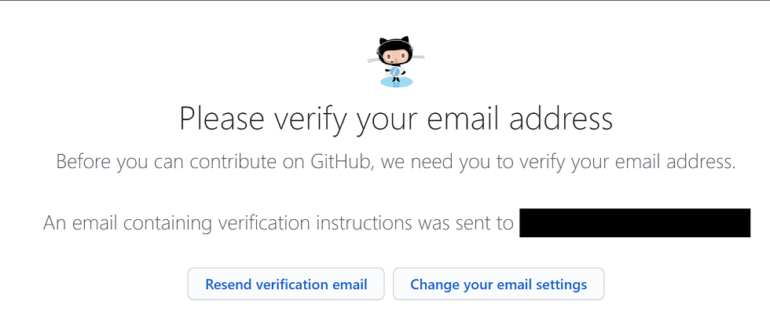

GitHubアカウントを作成してみよう
GitHubアカウントの作成と2要素認証設定までの手順を解説します。
0.事前準備
アカウントを作成する前に、下記のものを準備しましょう。
- メールアドレス
- スマートフォンまたは電話番号(2要素認証の際、どちらかを利用します)
1.Topページからアカウント作成画面へ
Topページ(https://github.co.jp/)にアクセスし、画面右上のサインアップをクリック。
2.各種情報設定
この画面では以下の情報を設定します。
- Username(入力必須項目)
- Email address(入力必須項目)
- Password(入力必須項目)
- Email preference
Usernameは、英数字とハイフンのみ使用出来ます。ハイフンは最初と最後には利用できません。
Passwordは、「数字と小文字を含めて8文字以上」または「16文字で任意の文字の組み合わせ」のどちらかの条件を満たすものを入力してください。
Email preferenceは、製品のアップデートやお知らせなどの通知をメールで受け取るかどうかの設定です。
通知を受け取りたい方はチェックを入れてください。
Verify your accountは、内容が人により異なります。
全ての設定が完了したら、Create Accountをクリックしましょう。
3.アンケート
仕事やプログラミング経験、GitHubの利用方法などユーザーの属性や興味関心についてのアンケート画面です。
回答しなくても「Complete setup」ボタンをクリックして次に進むことも出来ます。
4.確認メールの確認
2の画面で入力したメールアドレスに確認メールが送信されます。
メールの本文中にあるVerify email addressボタンをクリックしましょう。
メールが届かないという方は、ブラウザに表示されているこちらの画面でメールアドレスを確認して、再度メールを送信しましょう。
5.登録完了
Verify email Addressをクリックするとブラウザで下記のページが表示されたら、アカウント作成完了です。
6. 2要素認証(Two-factor authentication)
セキュリティの観点から、2要素認証(Two-factor authentication)を設定することを強く推奨します。
6-0.TOTP(時間ベースのワンタイムパスワード)アプリのダウンロード
今回はアプリでコードを取得する方法を選択します。(手順6-4)
こちらのヘルプに記載されているアプリのいずれかか、GoogleのAuthenticatorアプリが利用出来ます。
6-1.右上のアイコンをクリックして表示されたメニューからSettingsをクリック
6-2.左側のメニューからSecurityをクリック

6-3.Two-factor authentication項目から設定
「Enable two-factor authentication」ボタンをクリック
6-4.アプリかSMSのどちらを利用するか選択
サインインする際にユーザー名(またはメールアドレス)とパスワード以外にコードを入力する必要があります。
そのコードを受け取る方法をアプリかSMSのどちらかで設定することが出来ます。
今回はアプリを利用しようと思うので、「Set up using an app」ボタンをクリック。
6-5.リカバリーコード画面
万が一2Factor Authコードが受け取れない状況になった場合、この画面に記載されているコードを入力する必要があります。
大事なコードなので、ダウンロードや印刷、コピーのどれかを選択して管理するようにしてください。
6-6.QRコード画面
スマホ等にダウンロードしたAuthenticatorアプリを起動して、画面に表示されたQRコードを読み取りましょう。
アプリに6桁のコード(数字)が表示されるので、入力して「Enable」ボタンをクリック。
6-7.設定完了
こちらの画面が表示されるとTwo-facor suthenticationの設定は完了です。